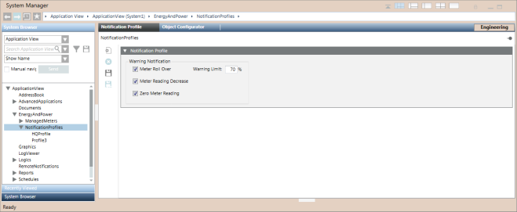

Notification Profiles Workspace
The Notification Profiles workspace provides options to issue warnings in the event of a meter rollover or a meter displaying incorrect values. You can access this application by selecting Application View > EnergyAndPower > NotificationProfiles.

Name | Description |
Meter Roll Over | Check this box to issue a warning message when the meter is about to roll over to its initial value. |
Warning Limit | Allows you to set a warning limit for a meter roll over. This warning limit is specified as a percentage of either of the following values:
When the meter reading reaches this limit, a status event displays after the irregularity check is performed. |
Meter Reading Decrease | Check this box to issue a fault event if the current value of the meter is less than the previous value. The fault event is issued after the irregularity check is performed. |
Zero Meter Reading | Check this box to issue a fault event when the meter reading is 0. The fault event is issued after the irregularity check is performed. |